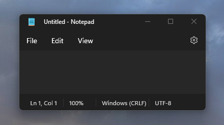

Apply rounded corners in desktop apps for Windows 11
Rounded corners are the most immediately noticeable feature of Windows 11 Geometry. On Windows 11, the system automatically rounds top-level window corners for all inbox apps, including all UWP apps, and most other apps. However, some Win32 apps might not be rounded. This topic describes how to round your Win32 app's main window corners if the system does not round them automatically.
Note
By design, apps are not rounded when maximized, snapped, running in a Virtual Machine (VM), running on a Windows Virtual Desktop (WVD), or running as a Windows Defender Application Guard (WDAG) window.

Why isn't my app rounded?
If your app's main window doesn't receive automatic rounding, it's because you've customized your frame in a way that prevents it. Apps fall into three main categories from the perspective of the Desktop Window Manager (DWM):
Apps that are rounded by default.
This includes apps that want a complete system-provided frame and caption-controls (min/max/close buttons), like Notepad. It also includes apps that provide enough information to the system so it can properly round them, such as setting the WS_THICKFRAME and WS_CAPTION window styles or providing a 1-pixel non-client area border that the system can use to round the corners.
Apps that are not rounded by policy, but can be rounded.
Apps in this category generally want to customize the majority of the window frame but still want the system-drawn border and shadow, such as Microsoft Office. If your app is not rounded by policy, it could be caused by one of the following things:
- Lack of frame styles
- Empty non-client area
- Other customizations, such as extra non-child windows used for custom shadows
Changing one of these things will break automatic rounding. Although we did try to round as many apps as possible with our system heuristics, there are some combinations of customizations that we can't predict so we provided a manual opt-in API for those cases. If you address these issues in your app or call the opt-in API, described in the following section, then it's possible for the system to round your app's window. Note, however, that the API is a hint to the system and does not guarantee rounding, depending on the customizations.
Apps that cannot ever be rounded, even if they call the opt-in API.
These apps have no frame or borders, and typically have heavily customized UI. If your app does one of the following, it cannot be rounded:
- Per-pixel alpha layering
- Window regions
For example, an app might use per-pixel alpha layering to draw transparent pixels around its main window to achieve a custom shadow effect, which makes the window no longer a rectangle and therefore the system cannot round it.
How to opt in to rounded corners
If your app is not rounded by policy, you can optionally use these APIs to let your app opt-in to rounded corners. You specify the corner rounding option you want for your app by passing a value of the DWM_WINDOW_CORNER_PREFERENCE enumeration (shown in the following table) to the DwmSetWindowAttribute function.
| Enum value | Description |
|---|---|
| DWMWCP_DEFAULT | Let the system decide whether or not to round window corners. |
| DWMWCP_DONOTROUND | Never round window corners. |
| DWMWCP_ROUND | Round the corners if appropriate. |
| DWMWCP_ROUNDSMALL | Round the corners if appropriate, with a small radius. |
A pointer to the appropriate value from this enum is passed to the third parameter of DwmSetWindowAttribute. For the second parameter, which specifies which attribute you are setting, pass the DWMWA_WINDOW_CORNER_PREFERENCE value defined in the DWMWINDOWATTRIBUTE enumeration.
For C# apps
DwmSetWindowAttribute is a native Win32 API and is not exposed directly to .NET code. You'll need to use your language's implementation of P/Invoke to declare the function (C# code is given in the example below). All standard WinForms and WPF apps are rounded automatically, but if you customize your window frame or use a third party framework, you might need to opt-in to rounded corners. See the Examples section for further details.
Examples
The following examples show how you can call DwmSetWindowAttribute or DwmGetWindowAttribute to control your app's rounding experience if your app is not rounded by policy.
Note
Error handling has been left out of these examples for brevity and clarity.
Example 1 - Rounding an app's main window in C# - WPF
This example shows how to call DwmSetWindowAttribute from C# by using the [DllImport] attribute. Note that this definition is specific to rounded corners; the DwmSetWindowAttribute function is designed to take different parameters depending on the flags provided, so this is not a general-purpose signature. The example also includes copies of the relevant enums from the dwmapi.h header file. Because the Win32 API takes a pointer for the third parameter, make sure to use the ref keyword so you can pass the address of a variable when you call the function. You can do this in your MainWindow class in MainWindow.xaml.cs.
using System.Runtime.InteropServices;
using System.Windows.Interop;
public partial class MainWindow : Window
{
// The enum flag for DwmSetWindowAttribute's second parameter, which tells the function what attribute to set.
// Copied from dwmapi.h
public enum DWMWINDOWATTRIBUTE
{
DWMWA_WINDOW_CORNER_PREFERENCE = 33
}
// The DWM_WINDOW_CORNER_PREFERENCE enum for DwmSetWindowAttribute's third parameter, which tells the function
// what value of the enum to set.
// Copied from dwmapi.h
public enum DWM_WINDOW_CORNER_PREFERENCE
{
DWMWCP_DEFAULT = 0,
DWMWCP_DONOTROUND = 1,
DWMWCP_ROUND = 2,
DWMWCP_ROUNDSMALL = 3
}
// Import dwmapi.dll and define DwmSetWindowAttribute in C# corresponding to the native function.
[DllImport("dwmapi.dll", CharSet = CharSet.Unicode, PreserveSig = false)]
internal static extern void DwmSetWindowAttribute(IntPtr hwnd,
DWMWINDOWATTRIBUTE attribute,
ref DWM_WINDOW_CORNER_PREFERENCE pvAttribute,
uint cbAttribute);
// ...
// Various other definitions
// ...
}
Next, in your MainWindow constructor, after the call to InitializeComponent, create a new instance of the WindowInteropHelper class to acquire a pointer to the underlying HWND (window handle). Make sure to use the EnsureHandle method to force the system to create an HWND for the window before it's shown, because normally the system only does so after exiting the constructor.
public MainWindow()
{
InitializeComponent();
IntPtr hWnd = new WindowInteropHelper(GetWindow(this)).EnsureHandle();
var attribute = DWMWINDOWATTRIBUTE.DWMWA_WINDOW_CORNER_PREFERENCE;
var preference = DWM_WINDOW_CORNER_PREFERENCE.DWMWCP_ROUND;
DwmSetWindowAttribute(hWnd, attribute, ref preference, sizeof(uint));
// ...
// Perform any other work necessary
// ...
}
Example 2 - Rounding an app's main window in C# - WinForms
Like with WPF, for a WinForms app you'll first need to import dwmapi.dll and the DwmSetWindowAttribute function signature with P/Invoke. You can do this in your primary Form class.
using System;
using System.Runtime.InteropServices;
public partial class Form1 : Form
{
// The enum flag for DwmSetWindowAttribute's second parameter, which tells the function what attribute to set.
// Copied from dwmapi.h
public enum DWMWINDOWATTRIBUTE
{
DWMWA_WINDOW_CORNER_PREFERENCE = 33
}
// The DWM_WINDOW_CORNER_PREFERENCE enum for DwmSetWindowAttribute's third parameter, which tells the function
// what value of the enum to set.
// Copied from dwmapi.h
public enum DWM_WINDOW_CORNER_PREFERENCE
{
DWMWCP_DEFAULT = 0,
DWMWCP_DONOTROUND = 1,
DWMWCP_ROUND = 2,
DWMWCP_ROUNDSMALL = 3
}
// Import dwmapi.dll and define DwmSetWindowAttribute in C# corresponding to the native function.
[DllImport("dwmapi.dll", CharSet = CharSet.Unicode, PreserveSig = false)]
internal static extern void DwmSetWindowAttribute(IntPtr hwnd,
DWMWINDOWATTRIBUTE attribute,
ref DWM_WINDOW_CORNER_PREFERENCE pvAttribute,
uint cbAttribute);
// ...
// Various other definitions
// ...
}
Calling DwmSetWindowAttribute is also the same as with a WPF app, but you don't have to use a helper class to get the HWND because it's simply a property of the Form. Call it from within your Form constructor, after the call to InitializeComponent.
public Form1()
{
InitializeComponent();
var attribute = DWMWINDOWATTRIBUTE.DWMWA_WINDOW_CORNER_PREFERENCE;
var preference = DWM_WINDOW_CORNER_PREFERENCE.DWMWCP_ROUND;
DwmSetWindowAttribute(this.Handle, attribute, ref preference, sizeof(uint));
// ...
// Perform any other work necessary
// ...
}
Example 3 - Rounding an app's main window in C++
For a native C++ app, you can call DwmSetWindowAttribute in your message processing function after window creation to ask the system to round you.
LRESULT ExampleWndProc(HWND hWnd, UINT message, WPARAM wParam, LPARAM lParam)
{
switch (message)
{
// ...
// Handle various window messages...
// ...
case WM_CREATE:
// ...
// Perform app resource initialization after window creation
// ...
if(hWnd)
{
DWM_WINDOW_CORNER_PREFERENCE preference = DWMWCP_ROUND;
DwmSetWindowAttribute(hWnd, DWMWA_WINDOW_CORNER_PREFERENCE, &preference, sizeof(preference));
}
break;
// ...
// Handle various other window messages...
// ...
}
return 0;
}
Example 4 – Rounding the corners of a menu with a small radius - C++
By default, menus are pop-up windows, which do not get rounded. If your app creates a custom menu and you want it to follow the rounding policy of other standard menus, you can call the API to let the system know that this window should be rounded, even though it doesn't appear to match the default rounding policy.
HWND CreateCustomMenu()
{
// Call an app-specific helper to make the window, using traditional APIs.
HWND hWnd = CreateMenuWindowHelper();
if (hWnd)
{
// Make sure we round the window, using the small radius
// because menus are auxiliary UI.
DWM_WINDOW_CORNER_PREFERENCE preference = DWMWCP_ROUNDSMALL;
DwmSetWindowAttribute(hWnd, DWMWA_WINDOW_CORNER_PREFERENCE, &preference, sizeof(preference));
}
return hWnd;
}